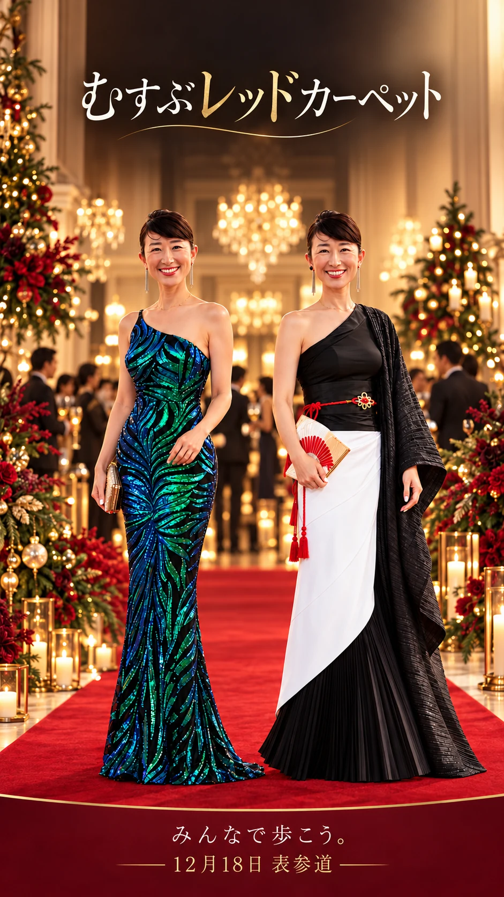

15,000円
食事・ドリンク／生ライブ／レッドカーペット／交流タイム
先行申込をする →
忘れてしまう忘年会ではなく、望みを持って迎える望年会へ。
表参道の光、プロのシンガーによる生ライブ、食事と会話。レッドカーペットを歩きながら、2026年にありがとうを伝え、2027年の自分の一歩を言葉にします。この夜は、参加する一人ひとりと一緒につくります。
THE EXPERIENCE
VENUE
会場はアニヴェルセル 表参道。会場の温かな空間に、赤いカーペットと音楽を迎えます。
EARLY ENTRY
会場のピアノやステージを使った「むすぶステージ」への参加希望を優先的に受け付けます。歌、ダンス、朗読、演奏、2027年の一歩の発表など、あなたの表現をみんなと分かち合えます。
※出演内容・時間・人数は事前相談と全体進行の調整により決定します。
RESERVE YOUR SPOT
ご希望のチケットを選び、詳細・お申込みへお進みください。
チケットを選ぶ →アニヴェルセル 表参道｜受付 18:00・開宴 18:30